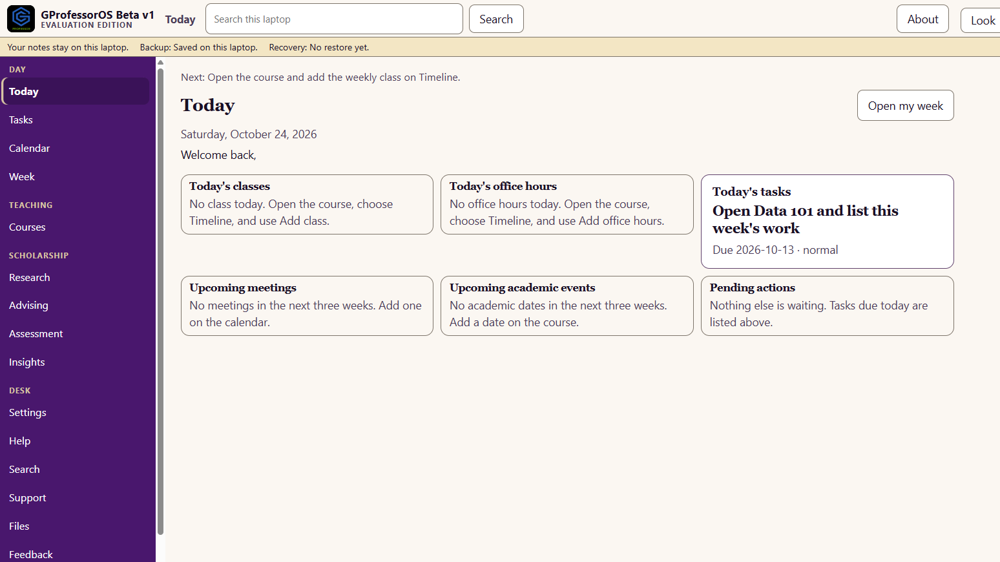
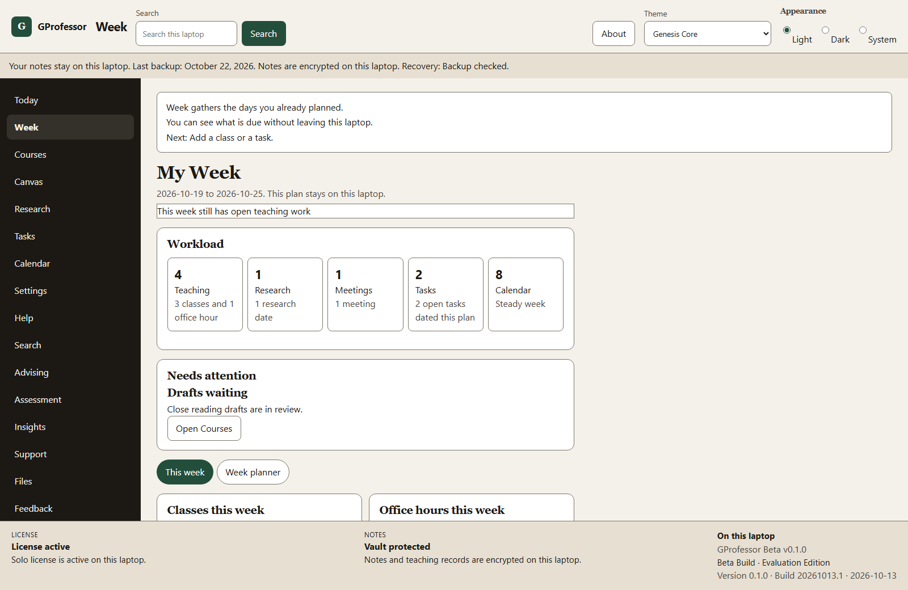
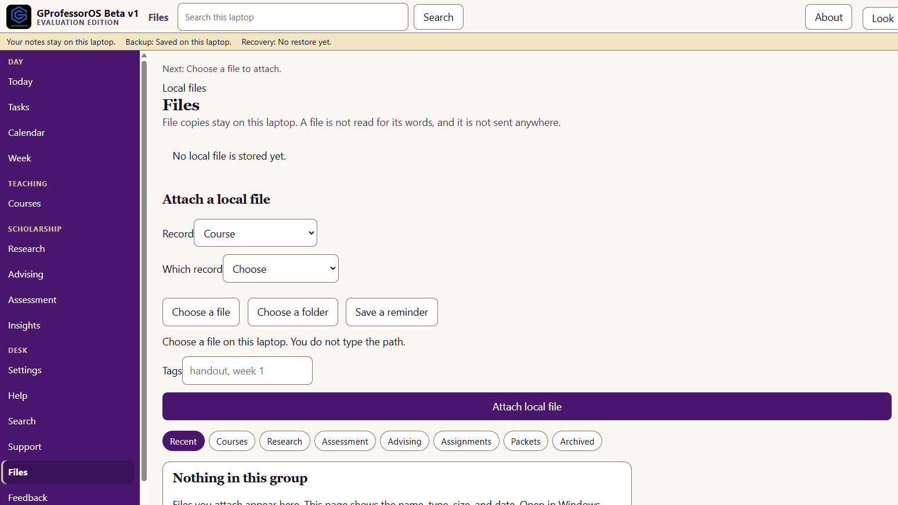
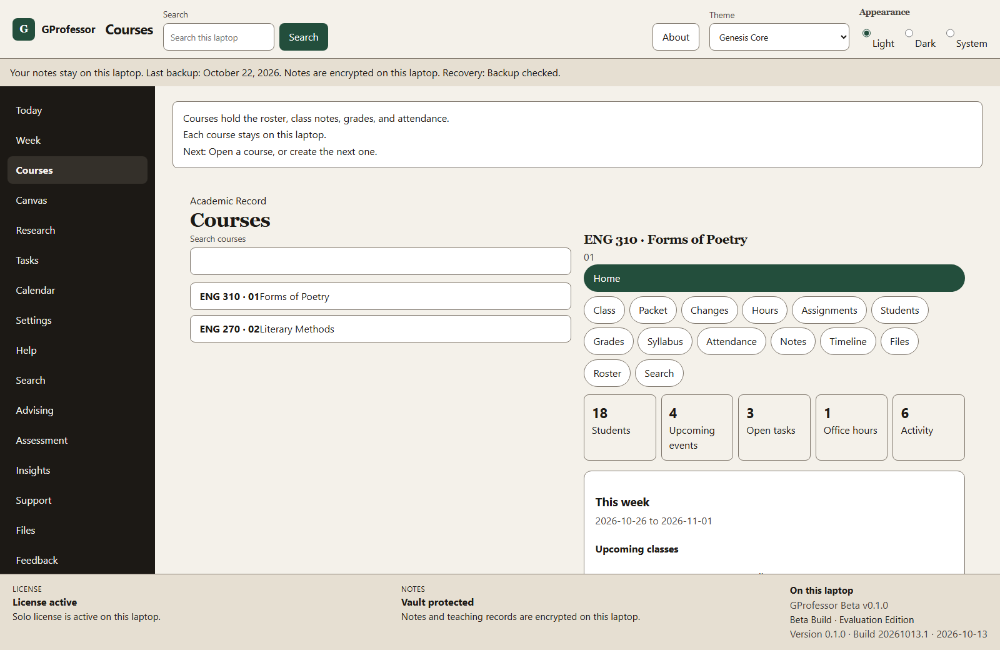
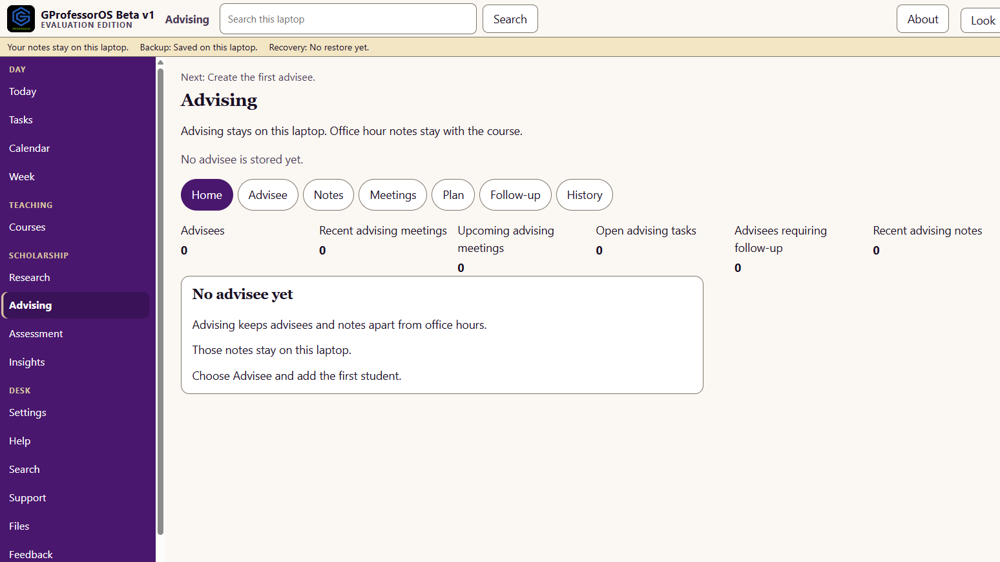
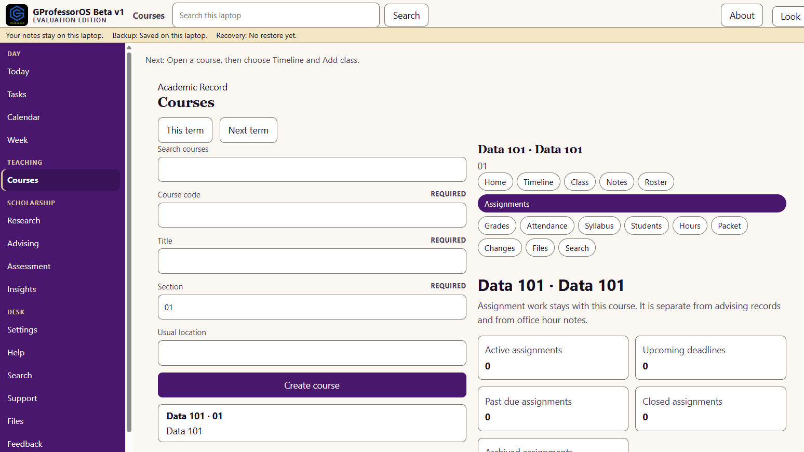
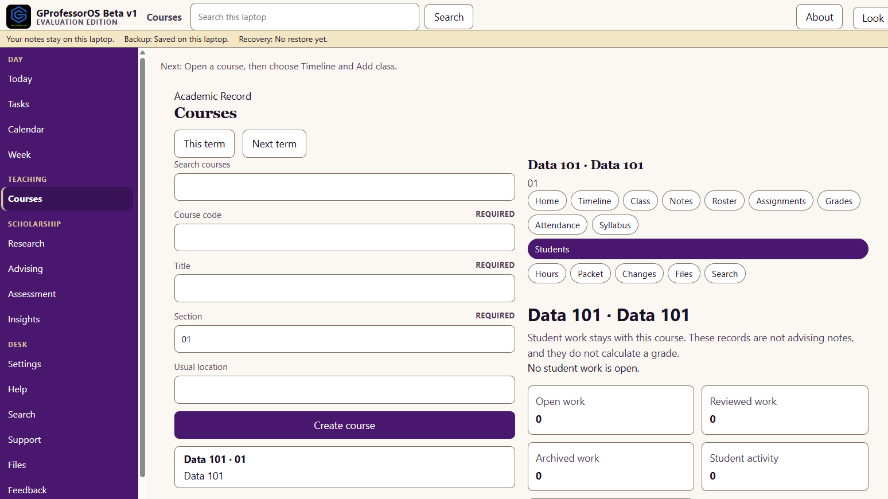
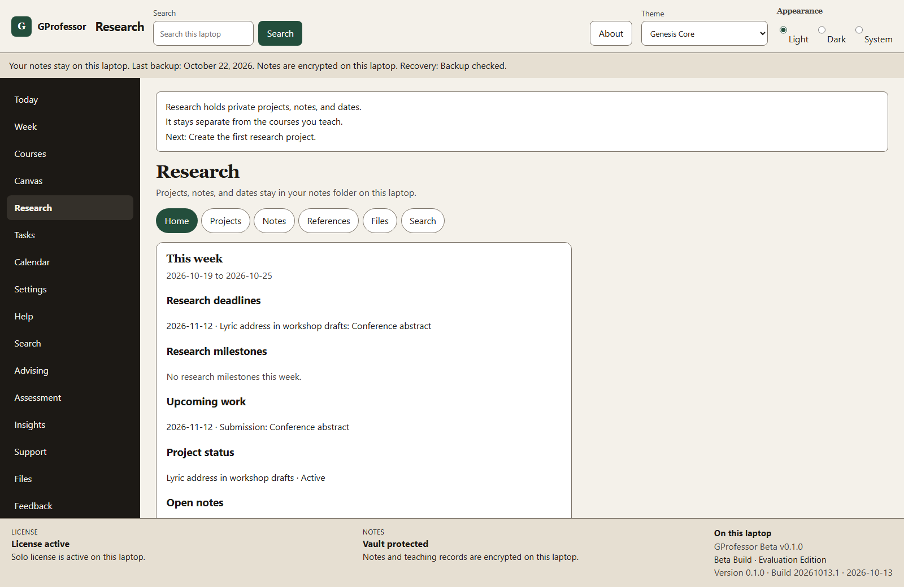

LMS
The campus system stays the official record. Your planning copy does not have to live in another browser tab.
GProfessor • GenesisOS Labs
The faculty workspace for teaching, grading, course management, student support, lesson planning, and research. One desk. Your data stays with you.

The problem
Faculty work is split across the LMS, email, file folders, a grading tool, class notes, and a separate research system. GProfessor puts the term in one workspace on your computer.
The campus system stays the official record. Your planning copy does not have to live in another browser tab.
Office-hour follow-ups and student questions stop sitting in an inbox with no course attached.
Syllabi, lecture files, and handouts attach to the course or project they belong to.
A private score notebook stays with the course. It does not replace the university gradebook.
Lecture notes, class agendas, and office-hour notes stay with the meeting that produced them.
Projects, references, and deadlines stay on the same computer, separate from the courses you teach.
Windows & macOS desktop beta
GProfessor is a Windows & macOS desktop beta. You install it on one computer, open your courses, and keep them there.
Today
Today is the page you open first. The week shows classes, office hours, deadlines, and the grading still open. Nothing on either page is sent off this computer.

Bring the term you already have
Choose a file or a folder. GProfessor keeps a copy with the record you pick. You do not type a path, and the file is not uploaded.
The page shows the name, type, size, and date. It does not open the document or read the words inside it. Search reads the records you stored, not the bytes in an attached file.

Courses, advising, and review
Open a course for its roster, assignments, and student work. Advising and research stay beside the course, on this computer.
Each course holds the roster, meetings, office hours, notes, and the week ahead. Data 101 stays on this computer. The campus system is not required to open it.

Advising notes stay on this computer, apart from office hours and the course record. The advising home keeps advisees, meetings, and follow-ups in one place.

Active work, upcoming due dates, and teaching notes stay with the course. Data 101 keeps assignment review on this computer, separate from advising notes.

Open work, reviewed drafts, and progress notes stay with the course. These records are not advising notes, and they do not calculate a grade.

Projects, notes, references, and dates stay in the notes folder on this computer. Research Matrices is the active project, kept out of the course grade record.
Join Free Beta
Who uses GProfessor
Built for individual faculty. Courses, notes, and research stay on this computer.
Courses, the week, and the grade notebook in the place you already work.
A private workspace for the courses you teach, kept on your computer.
Projects and references stay beside teaching, and stay on this computer.
Your own courses and notes. Chair tools for the department are not in this edition.
Class sessions, attendance, and assignment review for the sections you teach.
Each person keeps a private desk on their own computer.
Education
GStudent is the student workspace. GProfessor is the faculty workspace. Each one stays on that person's computer.
The student workspace. Classes, notes, assignments, and syllabi stay on the student's computer.
GStudent for StudentsThe faculty workspace. Courses, lectures, assignment review, student support, and research stay on your computer.
Join Free BetaQuestions
On your computer. Courses, student work, the grade notebook, and research notes stay in a private faculty workspace. They are not sent to a server.
No. The official gradebook and the learning management system stay at the institution. GProfessor can show a read-only Canvas sample until a school key is available. It does not submit grades, change attendance in the LMS, or edit the official syllabus.
Scores you enter stay in a private notebook on this computer. A change is recorded. GProfessor does not calculate an official course grade and does not send one to the university.
Attach a syllabus, lecture file, assignment, student submission, or research file that already lives on this computer. Choose a file or a folder. GProfessor keeps the name, type, size, and date with the course or project you pick. It does not upload the file, and it does not read the words inside it.
Not in this beta. Search reads records already stored on your computer. Grades, advising notes, student work, and research notes are not sent to a server.
No. GProfessor runs on one computer. Save an encrypted backup, write down the recovery code, and restore that backup on another computer. A second computer stays empty until you restore it.
Yes. The free beta is a Windows and macOS desktop app. You install it on one computer. Faculty notes stay on the computer where you install the beta.
Professors, adjunct faculty, researchers, department chairs, graduate instructors, and academic teams. GProfessor is the faculty workspace. GStudent is the student workspace.
Join the free Windows & macOS desktop beta. Your courses stay on your computer.
Your courses, on your computer.
Join Free Beta